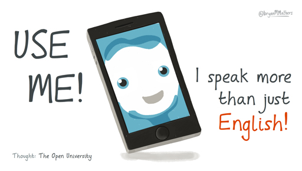

3 Creating a virtual immersion through your smartphone¶
Do you own a smartphone? An OfCom report from 2015 declared that the UK is ‘a smartphone society’ and 66 per cent of adults owned one. This is not a statistic that refers to the UK alone: in the USA, smartphone ownership is estimated at 68 per cent and a similar picture appears in many other developed countries.

Figure 1 Using your phone to learn a language.
Smartphones are an excellent tool to immerse yourself in a language when you’re not living in an area where your target language is spoken. There are a number of tools that come with most smartphones that can aid the language learning process. These include:
language settings (these can be changed so that menus and options,voice-controlled personal assistants like Siri and OK Google and apps you have installed, will be in the target language)
web browsers, which offer access to language learning web resources
multilingual text input (dictionary, grammar and auto-correct features can be set to the target language)
speech-to-text tools, which can act as tools for testing pronunciation and to check spelling
communication tools such as email/messaging/telephone/video conferencing, which can provide opportunities for synchronous or asynchronous communication among learners, teacher-student, or with native speakers
the photo/video camera, which provide possibilities for creating content that can be the basis of or illustrate communicative exchanges
satellite navigators (if the language setting has been changed, directions will be provided in the target language).
In addition, app stores such as iTunes and Google Play carry a myriad of apps that can be installed in your smartphone. In Week 3 we presented a classification of language-learning resources that divided them into those that are designed for language learning, those that are designed primarily for native speakers and dictionaries/translators. Here we use the same classification to suggest some apps that you may find useful.
3.1 Apps designed for language learning¶
The most popular apps for language learning are DuoLingo and Busuu. Others include LingQ, Mango, Speakeasy and Babbel to name but some. These apps provide activities to develop several skills as well as vocabulary and grammar. They offer opportunities to spend a few minutes every day reinforcing what you may have learnt elsewhere or indeed teach you new vocabulary and grammar, with plenty of opportunities to practise and memorise what you’ve learned.
Other language-learning apps focus on separate skills. If you search within your app store, you will find apps that provide grammar exercises, reading comprehension activities, help with writing (particularly useful for languages that have a different type of script to your first language) or pronunciation, for example.
Flashcard apps such as Anki, Duolingo Tinycards and Quizzlet provide an excellent way to help you memorise vocabulary. If you search the card sets that other users have uploaded you will probably find sets for the language you’re learning, often organised by level or topic. Remember that, as Tita explained in Week 6, you can also make your own cards, and that this will help you not only focus on the vocabulary that you find useful, but also making the cards will help you encode the vocabulary into your long-term memory.
3.2 Apps designed primarily for native speakers which language learners can find useful¶
News apps from the areas where your target language is spoken offer texts, audio and video resources to practise. In addition, they will help you develop your knowledge of the politics, history, and culture of those areas.
Podcast apps will offer you the possibility of listening to (mostly) audio resources on all sorts of topics, and the YouTube and Vimeo apps will provide an enormous variety of video content. Similarly, apps that provide reading material, such as Kindle, will offer access to reading material from literature classics to modern pieces. You can also buy or rent music and films, often with subtitles in the target language at least.
There are also apps available that offer virtual visits to places such as museums. You can explore their collections, view art pieces and read about them. Other useful apps for the language learner include, maps and geography (Geomaster) and geolocated information (Aurasma, Wikitude). Games can also be played in the target language (traditional games such as Scrabble or Hangman, or more current ones like Clash of Clans).
3.3 Dictionary and translation apps¶
Dictionary apps can often be integrated into other apps, such as e-book readers, so that words can be looked up directly within the app. Some dictionary and phrasebook apps also include pronunciation examples. These apps are also very useful on their own for looking up words when you need them. WordReference is a very useful app that will provide translations for words in many languages. Other apps (iTranslate, Google Translate) offer translation tools.
Activity 3 Find and install some apps on your smartphone¶
Timing: Allow about 45 minutes
Question¶
Go to the app store within your smartphone and look for one app in each of the categories listed above. The descriptions in the app store and reviews from other users will help you decide which ones would be suitable for your level. Download a free app for language learning, one for native speakers, and a dictionary or translation app. Spend 10 minutes trying each of the apps and think about how you may be able to use them, where and when. The fact that many of these apps provide content that can be consumed in a few minutes make them very useful for short bursts of language practise during breaks from other activity or when travelling in public transport, for instance.
Laura says:¶
I think it is also worth checking if one of the apps or games you already use is can be changed into your target language.

Figure 2 Immerse yourself!
Although apps can provide an excellent opportunity to immerse yourself in the language, they can also be a distraction. Think carefully about how much time you want to spend on the types of activity they offer and make sure that they aren’t stopping you from dedicating your time to other language learning activities that might be more useful to you at that particular stage in your language learning. Also, apps in your own language may prevent you from immersing yourself in the language when you visit an area where your target language is spoken. Many English students, for example, use apps that provide access to TV content in their own language while they’re abroad, or read the news from home. While they’re doing that, they aren’t watching TV in the language they’re learning.